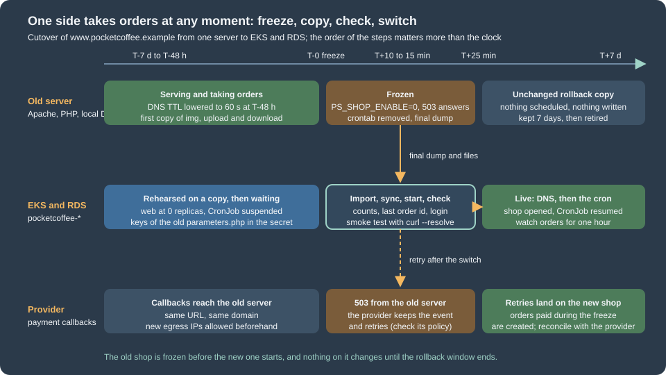

Cloud: Migrating from a Single Server
|
This content was generated with the assistance of AI and should be verified against the official documentation before being relied on in production. |
This page was written against PrestaShop 9.2.0 (PHP 8.1 to 8.5, the official prestashop/prestashop:9.2.0-fpm image as the base of the production image), RDS for MySQL 8.4 as the target database, Amazon EKS with Kubernetes 1.36 or 1.37 and Amazon EFS for the shared folders. It was checked on 2026-10-29. The behaviour of PrestaShop described here was read in the source of the 9.2.0 tag (app/config/set_parameters.php, config/bootstrap.php, classes/Cookie.php, classes/controller/FrontController.php, src/PrestaShopBundle/Install/Install.php and install-dev/data/db_structure.sql) and in the official documentation. The shell scripts were checked with shellcheck. Nothing was run against a real AWS account, a real payment provider or a shared-hosting control panel, so the sections on those say what the documentation states and what you must test in a rehearsal.
The shop is Pocket Coffee, the fictitious specialty-coffee seller of the other PrestaShop pages. Its single server, which runs Apache, PHP and a local MariaDB for https://www.pocketcoffee.example, moves to the cluster pocketcoffee-prod (namespace pocketcoffee, release pocketcoffee) in eu-west-1, with the database in the RDS instance pocketcoffee-prod (MySQL 8.4, database pocketcoffee, users ps_app and ps_migrate, table prefix ps_) and the shared folders on the EFS claim pocketcoffee-shared. The target is described on Cloud: Reference Architecture, the database on Cloud: Managed Database (RDS and Aurora), the image on Cloud: Production Container Image, the shared folders on Cloud: Shared Media and Writable Paths and the sessions, caches and back office on Cloud: Cache, Sessions and the Back Office in a Cluster. The generic mechanics of a move, the file copy and the domain change, are on the section "Moving a shop to another server or changing its domain" of Installation and Local Environments; this page links to it and adds only what changes when the target is a cluster. The WordPress version of the same move, with the same DMS and DNS material, is on Migrating from a Single Server, and the order-safe cutover of a WooCommerce store on Cloud: Migrating a Store from a Single Server.
The shape of a migration
A PrestaShop shop on one server keeps four kinds of state: the database, the shared files the shop writes (img/, upload/, download/), the code (core, modules and themes, some of it modified on the server) and the configuration (app/config/parameters.php, the admin folder name, the web-server rules). The cluster stores each in a different place, so a migration is four moves that must agree with each other at the end.
| State on the old server | Where it goes | How it moves |
|---|---|---|
Database ( |
RDS |
|
|
EFS claim |
|
Core, modules, themes |
The container image |
Not copied: rebuilt from your repository; the differences on the old server are found in the inventory and committed first |
|
A file in the image that reads the environment, which comes from the Secrets Manager secrets |
Rebuilt, keeping |
Shop domain and SSL |
Rows of |
Changed once, in the database, after the import |
Web-server rules ( |
The Nginx configuration of the |
Translated, see .htaccess to Nginx |
The rule that keeps a shop safe is the one of every migration with orders: at any moment exactly one side takes orders. The old server stays untouched until the new shop has answered real requests, and it stays available as the rollback.

Inventory of the old server
Do not start the new stack before you know what the old one contains. The inventory finds the facts that decide the method (the database size, the engine and its version) and the differences between the production server and the repository the image is built from, which are the usual cause of "it worked on the old server".
#!/usr/bin/env bash
# inventory.sh - read-only facts about a PrestaShop shop. Run on the old server as the owner of the files.
set -euo pipefail
SHOP_DIR="${SHOP_DIR:-/var/www/html}"
cd "$SHOP_DIR"
echo "== PrestaShop and PHP"
grep -rn "VERSION = " src/Core/Version.php | head -n 1 || true
php -v | head -n 1
php -r 'echo implode(" ", get_loaded_extensions()), PHP_EOL;'
echo "== Parameters (keys only, never values)"
# shellcheck disable=SC2016
php -r '$p = (require "app/config/parameters.php")["parameters"]; echo implode("\n", array_keys($p)), PHP_EOL;'
echo "== Database engine, size and non-InnoDB tables"
DB_NAME="$(php -r 'echo (require "app/config/parameters.php")["parameters"]["database_name"];')"
DB_PREFIX="$(php -r 'echo (require "app/config/parameters.php")["parameters"]["database_prefix"];')"
mysql --defaults-extra-file="$HOME/.my.cnf" -e "SELECT VERSION();"
mysql --defaults-extra-file="$HOME/.my.cnf" -e "
SELECT table_name, ROUND((data_length + index_length) / 1024 / 1024) AS mb, engine
FROM information_schema.tables
WHERE table_schema = '${DB_NAME}'
ORDER BY (data_length + index_length) DESC LIMIT 15;"
mysql --defaults-extra-file="$HOME/.my.cnf" -e "
SELECT table_name, engine FROM information_schema.tables
WHERE table_schema = '${DB_NAME}' AND engine <> 'InnoDB';"
mysql --defaults-extra-file="$HOME/.my.cnf" -e "
SELECT id_shop, domain, domain_ssl, physical_uri, main, active FROM ${DB_PREFIX}shop_url;"
echo "== Shared folders"
du -sh img upload download 2>/dev/null
find img -type f | wc -l
echo "== Code changed on the server (modules and themes not in the repository)"
find modules -mindepth 1 -maxdepth 1 -type d | wc -l
find themes -mindepth 1 -maxdepth 1 -type d
find override -name '*.php' -not -name index.php | head -n 20
echo "== Admin folder and web-server rules"
find . -maxdepth 1 -type d -name 'admin*'
test -f .htaccess && wc -l .htaccess
echo "== Scheduled tasks"
crontab -l 2>/dev/null || trueSource: PrestaShop devdocs: System requirements and MySQL reference: the INFORMATION_SCHEMA TABLES table
The script reads only keys of parameters.php, never values, so its output can be pasted into a ticket. What to do with each result:
-
The database size decides between a dump and DMS (see AWS DMS). A catalogue of a few thousand products with some years of orders is typically hundreds of megabytes to a few gigabytes, which a dump moves in minutes. Measure it in the rehearsal, never estimate it.
-
The biggest tables are usually the statistics and log tables, not the catalogue or the orders:
ps_connections,ps_connections_source,ps_connections_page,ps_guest,ps_page_viewed,ps_logandps_mailare all created by the installer (read indb_structure.sql). They are written by visits and by the mail log. On a shop that has been running for years they can be most of the dump. If you do not need the history, truncating them on the old server a week before the move shortens every later step; keep the rows if the statistics modules matter to the business. -
Non-InnoDB tables. The installer creates InnoDB tables (
database_engineisInnoDBinparameters.yml.dist), but old shops and some modules have MyISAM tables. They import into RDS without trouble, but they are not crash-safe, are not covered by--single-transaction, and are locked while they are dumped. Convert them withALTER TABLE ... ENGINE=InnoDBon a copy during the rehearsal. -
The shop URLs. More than one row, or a
physical_uriother than/, means a multistore or a shop in a sub-folder; the domain change below must handle every row. -
Modules and overrides not in the repository. A module installed from the back office, a patched file in
modules/or a file inoverride/exists only on the old server. Copy them into the repository and rebuild the image; the cluster has no way to keep a hand edit on a pod, and the old server stops being the source of the code. The fileoverride/mechanism and the decoration alternative are on Module Upgrades, Overrides and Decoration. -
The PHP extensions and version. The image must have every extension the old server loads that a module needs; the official requirement list is on Installation and Local Environments.
-
The admin folder. The back-office folder was renamed by the installer (
adminfollowed by random characters). The production image renames it at build toadmin-pocketcoffee; the new address is a change for the employees, and the old one must not be reachable. -
Scheduled tasks. Whatever the crontab of the old server calls (a module cron such as an abandoned-cart reminder or a feed export) becomes a Kubernetes CronJob, described on Cloud: Cache, Sessions and the Back Office in a Cluster. Remove the old crontab at the freeze, or both sides send the same mails.
Preparing the target
Do not run the PrestaShop installer on the cluster. The installer creates a fresh database and a new parameters.php with new keys, which is the opposite of what a migration needs. The target is prepared in this order:
-
The RDS instance, its parameter group (
utf8mb4, amax_allowed_packetat least as large as the largest row of the dump) and the two usersps_appandps_migrateexist, as described on Cloud: Managed Database (RDS and Aurora). The databasepocketcoffeeis empty. -
The Secrets Manager secret
pocketcoffee/prod/prestashopholds the keys of the old shop (see Rebuilding parameters.php), andpocketcoffee/prod/prestashop-db-appandpocketcoffee/prod/prestashop-db-migratehold the credentials of the two database users (the seeding script of the Helm page creates all of them). -
The image
123456789012.dkr.ecr.eu-west-1.amazonaws.com/pocketcoffee/prestashopwas built from your repository, with the core9.2.0or the version the old shop runs. Migrate on the same PrestaShop version and upgrade afterwards: a move that is also a major upgrade has two causes for every failure. The upgrade itself is on Cloud: Releases and Upgrades. -
The EFS claim
pocketcoffee-sharedexists and is writable by user and group33(thewww-dataof the image), as described on Cloud: Shared Media and Writable Paths. -
The Deployment
pocketcoffee-webcan be scaled to zero (autoscaling.enabled=falseandweb.replicas: 0in the values, because the HPA would otherwise start pods) until the data is in place, so no pod starts against an empty database.
If the old shop runs a different PrestaShop version than the image, align one of them first. The core files are part of the image, and the database schema version is stored in the database (ps_configuration key PS_VERSION_DB), so a shop whose files are newer than its database asks for an upgrade on the first request.
Moving the database
Dump
Take the dump from a consistent snapshot without locking the shop. For InnoDB tables --single-transaction does that; the shop keeps selling while the dump runs, which is why the final dump of the cutover is taken only after the freeze.
#!/usr/bin/env bash
# dump.sh - consistent dump of the PrestaShop database from the old server.
set -euo pipefail
: "${DB_NAME:?set DB_NAME}"
OUT="${OUT:-pocketcoffee-$(date +%Y%m%d-%H%M).sql.gz}"
# --single-transaction consistent InnoDB snapshot, no table locks
# --routines --events stored routines and events (modules may add them; the core schema has none)
# --triggers is the default, written explicitly so the intent is visible
# --default-character-set the tables are utf8mb4; the client default can differ on an old server
# --no-tablespaces the dump user does not need the PROCESS privilege
# --set-gtid-purged=OFF MySQL source only: RDS refuses the GTID_PURGED statement (omit it on MariaDB)
# --hex-blob binary columns survive any client character set
mysqldump \
--defaults-extra-file="$HOME/.my.cnf" \
--single-transaction \
--routines --events --triggers \
--default-character-set=utf8mb4 \
--no-tablespaces \
--set-gtid-purged=OFF \
--hex-blob \
--max-allowed-packet=256M \
"$DB_NAME" | gzip -9 > "$OUT"
# a dump that ends without this marker is truncated
zcat "$OUT" | tail -n 1 | grep -q 'Dump completed' || { echo "truncated dump: $OUT" >&2; exit 1; }
sha256sum "$OUT" > "$OUT.sha256"
echo "$OUT"Source: MySQL reference: mysqldump and Amazon RDS User Guide: Importing data from a MySQL or MariaDB DB to an Amazon RDS for MySQL DB instance
The options matter in these ways on PrestaShop:
-
Character set. The 9.2 installer creates every table with
DEFAULT CHARSET=utf8mb4(the CREATE statements indb_structure.sql). Dumping with--default-character-set=utf8mb4and importing with the same setting is what keeps accents, the euro sign and emoji in product names intact; a shop dumped withlatin1by a client default imports "successfully" with corrupted text. A shop installed long ago may still haveutf8(three-byte) tables; they import unchanged, and converting them is a separate task for the rehearsal. -
Table prefix. The dump carries the prefix,
ps_on the Pocket Coffee shop. The prefix is alsodatabase_prefixinparameters.php; they must match. A shop with another prefix keeps it: do not rename tables during a migration. -
A MariaDB source and a MySQL 8.4 target. PrestaShop 9.2 supports both (see Installation and Local Environments), but the dump of a MariaDB server can contain syntax that MySQL does not accept (
DEFAULT uuid(),PAGE_CHECKSUM, sequences, the/*M!conditional comments are ignored, others are not). The PrestaShop schema is plain, so the usual cause is a module table. The rehearsal import into a scratch RDS instance finds it; moving MariaDB to MariaDB (RDS for MariaDB 11.8) avoids the question. A MySQL 8.0 client’smysqldumpagainst a MariaDB or 5.7 server needs--column-statistics=0. -
DEFINERclauses. RDS users do not have theSUPERprivilege, so a view or trigger that a module created withDEFINER=root@localhostfails to import. The core schema has none; if a module does, remove the clause while importing, with asedfilter betweenzcatandmysqlthat deletes theDEFINER=user@hostwords (the clause is written with backticks around the user and the host). Count them first withzcat dump.sql.gz | grep -c DEFINERin the rehearsal. -
sql_mode. PrestaShop’s PDO layer runsSET SESSION sql_mode = ''on each connection (classes/db/DbPDO.php), so the server setting does not change its queries, but it does change what a module or a manual query does. Keep the RDS parameter group default unless a module needs another.
Import into RDS
The cluster reaches RDS through private subnets and a security group that only allows the node group, so a laptop cannot import directly. Two patterns work: a Job in the cluster (nothing to maintain) or a bastion host in the VPC. Both use TLS with the RDS CA bundle. The Job below downloads the dump from S3 in an init container and imports it with the migration user; the Kubernetes Secret pocketcoffee-secrets of the chart holds the password of ps_migrate under the key DB_PASSWORD_MIGRATE (the External Secrets Operator creates it from the Secrets Manager secret pocketcoffee/prod/prestashop-db-migrate; it is never written into the manifest). Install the chart once with autoscaling.enabled=false, web.replicas: 0 and migrate.enabled=false before the import (see Preparing the target); that creates the Secret without starting a pod.
apiVersion: batch/v1
kind: Job
metadata:
name: pocketcoffee-import
namespace: pocketcoffee
spec:
backoffLimit: 0
ttlSecondsAfterFinished: 86400
template:
spec:
restartPolicy: Never
serviceAccountName: pocketcoffee-import # a service account made for this one-off, with an IRSA or Pod Identity role that has s3:GetObject on the migration bucket
volumes:
- name: work
emptyDir: {}
initContainers:
- name: fetch
image: amazon/aws-cli:2.34.0
args:
- s3
- cp
- s3://pocketcoffee-migration-123456789012/pocketcoffee-final.sql.gz
- /work/dump.sql.gz
volumeMounts:
- name: work
mountPath: /work
containers:
- name: import
image: mysql:8.4
command: ["/bin/bash", "-ec"]
args:
- |
curl -fsSL -o /work/rds-ca.pem https://truststore.pki.rds.amazonaws.com/global/global-bundle.pem
zcat /work/dump.sql.gz | mysql \
--host="${DB_SERVER}" --user=ps_migrate --password="${DB_PASSWD}" \
--default-character-set=utf8mb4 \
--ssl-mode=VERIFY_IDENTITY --ssl-ca=/work/rds-ca.pem \
pocketcoffee
mysql --host="${DB_SERVER}" --user=ps_migrate --password="${DB_PASSWD}" \
--ssl-mode=VERIFY_IDENTITY --ssl-ca=/work/rds-ca.pem pocketcoffee \
-e "SELECT COUNT(*) AS orders FROM ps_orders; SELECT COUNT(*) AS customers FROM ps_customer;"
env:
- name: DB_SERVER
value: pocketcoffee-prod.cluster-example.eu-west-1.rds.amazonaws.com
- name: DB_PASSWD
valueFrom:
secretKeyRef:
name: pocketcoffee-secrets
key: DB_PASSWORD_MIGRATE
volumeMounts:
- name: work
mountPath: /workSource: Kubernetes: Jobs and Amazon RDS User Guide: Using SSL/TLS to encrypt a connection to a DB instance
The host name is a placeholder: use the endpoint of your instance (terraform or tofu output, or aws rds describe-db-instances). The image mysql:8.4 ships the client; the importing user needs CREATE, ALTER, DROP, INDEX, INSERT, LOCK TABLES and REFERENCES on the database, which is why a separate ps_migrate exists and the shop itself runs as ps_app with data privileges only. The script ends with two counts that you compare with the old server in the verification step. From a bastion the commands are the same with mysql run directly.
#!/usr/bin/env bash
# import-from-bastion.sh - the same import from a host inside the VPC.
set -euo pipefail
: "${DB_SERVER:?set DB_SERVER to the RDS endpoint}"
: "${DUMP:?set DUMP to the dump file}"
CA="${CA:-global-bundle.pem}"
[ -f "$CA" ] || curl -fsSL -o "$CA" https://truststore.pki.rds.amazonaws.com/global/global-bundle.pem
# the password is read from the environment by the client, not typed on the command line
export MYSQL_PWD
MYSQL_PWD="$(aws secretsmanager get-secret-value --secret-id pocketcoffee/prod/prestashop-db-migrate \
--query SecretString --output text | jq -r '.password')"
zcat "$DUMP" | mysql --host="$DB_SERVER" --user=ps_migrate \
--default-character-set=utf8mb4 --ssl-mode=VERIFY_IDENTITY --ssl-ca="$CA" pocketcoffeeThe secret is the database credential of ps_migrate (username, password, host, …) that the seeding script of the Helm page creates. For the import time, count on the dump time or more: index maintenance on RDS is the slow part, and a larger instance class for the import day, resized down afterwards, is a legitimate trick.
AWS DMS for a shorter freeze
A dump and import takes the freeze as long as the dump, the upload and the import together. When that exceeds the maintenance window the business accepts, AWS Database Migration Service copies the database once (full load) and then replays the source’s changes (change data capture) until you stop the task at the cutover. The source needs binary logging in ROW format with a retention longer than the full load, a replication user and network access from the replication instance; those requirements, DMS’s limits (it copies tables and primary keys but not secondary indexes, views, triggers or routines the way a dump does) and the schema-first method are explained on the WordPress page and on Architecture, Migration and Hybrid. They apply unchanged to the ps tables.
What PrestaShop adds:
-
Create the schema with a
--no-datadump (and import it asps_migrate) before the task starts, so every index, default and engine exists; DMS then only loads rows. -
Binary logging on a shared host is usually not available. DMS is a method for a VPS or dedicated server you control, not for shared hosting.
-
DMS does not make two writers safe. You still freeze the shop at the end. It shortens the copy, not the freeze rule.
-
Compare, do not trust. After the task stops, compare row counts and a checksum of the tables that matter (
ps_orders,ps_order_detail,ps_customer,ps_cart,ps_configuration) between the two databases.
Moving the shared files
Three folders hold what the shop writes, and they are the ones that move (the exact set shared by every pod is defined on Cloud: Shared Media and Writable Paths):
| Folder | Content | Notes |
|---|---|---|
|
Product images ( |
The biggest folder. Skip |
|
Files that customers attach to customizable products |
Order data points at them; a missing file breaks the order detail of the back office, not the order |
|
Virtual products (files customers download after paying) |
Revenue depends on them: test one download after the move |
Product images exist in several sizes, generated from the original; a missing size is recreated by bin/console prestashop:thumbnails:regenerate (see CLI Commands) at the cost of minutes to hours of CPU, which is why you copy the generated sizes. Everything else (modules/, themes/, override/, translations/ and mails/ as committed) is in the image. Two folders deserve a look before you decide they are only code: translations/ and mails/ hold what an editor changes in the back office (customised translations, edited mail templates). Find them in the inventory and commit the changes into the repository; if the shop depends on editing them live, they belong to the shared set instead.
The copy runs in two passes: a pre-copy days before the cutover, while the old shop is selling (it moves most of the bytes), and a final sync after the freeze that moves only what changed (new product images, new customer uploads). The patterns below differ in where the destination is.
Straight to EFS through a pod
A helper pod mounts the EFS claim and a tar stream over kubectl exec writes through it. No new network path is opened, and nothing is installed on the old server except tar and kubectl.
#!/usr/bin/env bash
# sync-files-to-efs.sh - copy img/, upload/ and download/ into the EFS claim with tar over kubectl exec.
# Run from a machine that can reach the cluster and has the shop files (or mount them over SSHFS).
set -euo pipefail
NS="${NS:-pocketcoffee}"
SRC="${SRC:-/var/www/html}"
POD="shared-copy"
kubectl -n "$NS" apply -f - <<'EOF_POD'
apiVersion: v1
kind: Pod
metadata:
name: shared-copy
spec:
restartPolicy: Never
securityContext:
runAsUser: 33
runAsGroup: 33
containers:
- name: copy
image: alpine:3.22
command: ["sleep", "86400"]
volumeMounts:
- name: shared
mountPath: /shared
volumes:
- name: shared
persistentVolumeClaim:
claimName: pocketcoffee-shared
EOF_POD
kubectl -n "$NS" wait --for=condition=Ready "pod/$POD" --timeout=180s
for dir in img upload download; do
echo "== $dir"
# tar keeps the layout and times; the exclude skips the temporary thumbnails
tar -C "$SRC" --exclude="$dir/tmp" -cf - "$dir" \
| kubectl -n "$NS" exec -i "$POD" -- tar -C /shared -xf - --no-same-owner
done
kubectl -n "$NS" exec "$POD" -- sh -c 'du -sh /shared/*; find /shared/img/p -type f | wc -l'
kubectl -n "$NS" delete pod "$POD"Source: Kubernetes: kubectl exec and GNU tar manual
kubectl cp does the same with a tar stream internally and needs tar in the pod; see Kubernetes: kubectl cp. It is fine for a small folder such as download/ and slow and fragile for hundreds of thousands of images, because it has no resume. A tar stream copies everything on each run, so it suits a first copy of a small shop; for a large one and for the final sync use the S3 pattern, which sends only changes.
Through S3 and a copy Job
For a large img/ the robust pattern is to send the files to a bucket with aws s3 sync (which skips what is already there and resumes after an interruption), then copy them into EFS from a Job inside the cluster, in the same VPC and next to the filesystem. The old server needs only an IAM user or role with write access to one bucket; no Kubernetes access.
#!/usr/bin/env bash
# sync-files-to-s3.sh - upload img/, upload/ and download/ to the staging bucket. Safe to run repeatedly.
set -euo pipefail
SRC="${SRC:-/var/www/html}"
BUCKET="${BUCKET:-pocketcoffee-migration-123456789012}"
for dir in img upload download; do
aws s3 sync "$SRC/$dir/" "s3://$BUCKET/shared/$dir/" \
--only-show-errors --exclude 'tmp/*' --exclude 'index.php' --exclude '.htaccess'
doneSource: AWS CLI: aws s3 sync
The two excluded names are the index.php that PrestaShop puts in every folder and the .htaccess of img/, upload/ and download/. Both come with the code; on the cluster the Nginx configuration does the job of the .htaccess files (see below).
apiVersion: batch/v1
kind: Job
metadata:
name: pocketcoffee-files-restore
namespace: pocketcoffee
spec:
backoffLimit: 0
ttlSecondsAfterFinished: 86400
template:
spec:
restartPolicy: Never
serviceAccountName: pocketcoffee-migrate
securityContext:
runAsUser: 33
runAsGroup: 33
containers:
- name: sync
image: amazon/aws-cli:2.34.0
args:
- s3
- sync
- s3://pocketcoffee-migration-123456789012/shared/
- /shared/
- --only-show-errors
volumeMounts:
- name: shared
mountPath: /shared
volumes:
- name: shared
persistentVolumeClaim:
claimName: pocketcoffee-sharedRun the Job again after the freeze for the final sync. The EFS access point of pocketcoffee-shared forces the user and group 33, so the files are owned by the web user no matter who wrote them. If you serve img/ from a CDN or S3 instead of EFS, the same bucket is the destination, with the media settings of the shared-files page; the migration stays the same.
The shop domain and SSL
A PrestaShop shop stores its address in the database, and a request whose host differs from the stored main domain is redirected to it (the canonical redirection in FrontController; the installation page measured a 302 on the throwaway shop). After the import the address is still the old one. The change is the one described in the section "Moving a shop to another server or changing its domain" of Installation and Local Environments: the row of the shop in ps_shop_url (domain, domain_ssl, physical_uri) and the configuration keys PS_SHOP_DOMAIN and PS_SHOP_DOMAIN_SSL. Read there, not here, the statements and the content search; the installer writes both configuration keys from the host it was run on (Install.php). This section covers only what is specific to the cluster.
-
The domain can stay the same. In a migration the public domain is usually unchanged (
www.pocketcoffee.example), only DNS points elsewhere. Then the database change is nothing: the old row is right. It is needed only when the domain changes, or for the temporary test host below. -
Test before DNS with the real host. Keep
domainanddomain_sslas the production value and test the new stack withcurl --resolve www.pocketcoffee.example:443:<load balancer IP>or ahostsentry. This tests the shop exactly as customers will, and avoids changing the database twice. Use a staging host inps_shop_urlonly for a rehearsal on a copy, never on the database of the cutover. -
PS_SSL_ENABLED. The installer stores this key (Install.phpwritesPS_SSL_ENABLEDfrom the installation option). When it is1, the shop buildshttps://URLs. TLS ends at the load balancer in the cluster, and the pods see plain HTTP. The shop decides whether a request is secure from the server variables (HTTPS,REDIRECT_HTTPS, thenHTTP_X_FORWARDED_PROTO, read inTools::usingSecureMode()), so the Nginx configuration must pass the protocol of the original request on to PHP-FPM, as shown on Cloud: Production Container Image. If it does not, a shop withPS_SSL_ENABLED=1redirects every request tohttpsforever behind a load balancer that talkshttpto the pod. In 9.2.0 the source has no separate "SSL everywhere" key; do not look for one. -
The SQL cache servers live in the database. When the old shop used Memcached for the SQL cache, the servers are rows of the table
ps_memcached_servers(CacheMemcachedreads them), and they came across with the dump pointing at the old server. Replace them with the ElastiCache endpoint, or delete them and leaveps_cache_enablefalse, before the first request. -
Absolute addresses written inside content (CMS pages, product descriptions, mail templates) change only with the domain. If the domain stays, nothing to do.
-
CDN and media addresses. If images are served from a media host (
media.pocketcoffee.example), the setting is in the back office (Performance, media servers) and is stored inps_configuration; set it after the import, together with the CDN described on Cloud: Shared Media and Writable Paths.
Rebuilding parameters.php
On the old server app/config/parameters.php is a file the installer wrote once. On the cluster it is a file of the image that reads the secret and a few environment variables at pod start, so that the same image runs in every environment and no password is baked into a layer. The migration question is what to keep from the old file and what to replace.
| Key | On the new stack | Why |
|---|---|---|
|
The RDS endpoint, |
Replaced. Keep the prefix and the engine of the old file |
|
Copied unchanged from the old file into the secret |
|
|
Copied unchanged from the old file into the secret |
The cookie is encrypted with it ( |
|
Copied unchanged |
Symfony’s secret, used for tokens such as the CSRF protection of the back office; every pod must have the same one |
|
Copied unchanged |
The Admin API signs and verifies its tokens with them (see Admin API); new keys invalidate every issued token |
|
The new mail relay (Amazon SES or another), |
Replaced. An old server often relays mail through |
|
Copied, except |
|
The keys are in the secret pocketcoffee/prod/prestashop as PS_COOKIE_KEY, PS_COOKIE_IV, PS_NEW_COOKIE_KEY and PS_SECRET and, if the shop uses the Admin API, PS_API_PUBLIC_KEY and PS_API_PRIVATE_KEY, the names of the environment variables that the parameters.php of the image reads. They are secrets of the same weight as the database password; the rotation of them is on Cloud: Autoscaling, Observability, Backups and Security.
Read the values on the old server once, and write them to Secrets Manager without printing them:
#!/usr/bin/env bash
# keys-to-secret.sh - copy the keys of the old parameters.php into the Secrets Manager secret. Run on the old server.
set -euo pipefail
PARAMS="${PARAMS:-/var/www/html/app/config/parameters.php}"
SECRET_ID="pocketcoffee/prod/prestashop"
# the keys are read by PHP and written to a private tmpfs file; nothing is echoed
umask 077
# shellcheck disable=SC2016
php -r '
$p = (require $argv[1])["parameters"];
// parameters.php key => key of the Secrets Manager secret (and environment variable of the pods)
$keep = ["cookie_key" => "PS_COOKIE_KEY", "cookie_iv" => "PS_COOKIE_IV", "new_cookie_key" => "PS_NEW_COOKIE_KEY",
"secret" => "PS_SECRET", "api_public_key" => "PS_API_PUBLIC_KEY", "api_private_key" => "PS_API_PRIVATE_KEY"];
$out = [];
foreach ($keep as $k => $name) {
if (!isset($p[$k])) { fwrite(STDERR, "missing key: $k\n"); }
else { $out[$name] = $p[$k]; }
}
echo json_encode($out);
' "$PARAMS" > /dev/shm/ps-keys.json
# merge with the keys already in the secret (the database passwords are in their own secrets)
CURRENT="$(aws secretsmanager get-secret-value --secret-id "$SECRET_ID" --query SecretString --output text)"
jq -s '.[0] * .[1]' <(printf '%s' "$CURRENT") /dev/shm/ps-keys.json > /dev/shm/ps-merged.json
aws secretsmanager put-secret-value --secret-id "$SECRET_ID" --secret-string file:///dev/shm/ps-merged.json >/dev/null
shred -u /dev/shm/ps-keys.json /dev/shm/ps-merged.json
echo "keys copied: $(jq -r 'keys | join(", ")' <<<"$CURRENT") + old keys"The file app/config/parameters.php of the old server is also the only copy of these values that is not backed up by the secret, so keep an encrypted offline copy of the old file until the old server is retired.
The file is part of the image and is the same in every pod; it reads the environment, which the pods get from the ConfigMap and the Secret of the chart (see the Helm page). It contains no secret. The excerpt shows the keys that a migrated shop must carry over, with the environment variables they read:
<?php
// app/config/parameters.php of the image, read from the environment. No value below is a secret.
return [
'parameters' => [
'database_host' => getenv('DB_SERVER'),
'database_port' => getenv('DB_PORT') ?: '3306',
'database_name' => getenv('DB_NAME'),
'database_user' => getenv('DB_USER'),
'database_password' => getenv('DB_PASSWD'),
'database_prefix' => getenv('DB_PREFIX') ?: 'ps_',
'database_engine' => 'InnoDB',
'mailer_transport' => 'smtp',
'mailer_host' => getenv('MAILER_HOST'),
'mailer_user' => getenv('MAILER_USER'),
'mailer_password' => getenv('MAILER_PASSWORD'),
'secret' => getenv('PS_SECRET'),
'cookie_key' => getenv('PS_COOKIE_KEY'),
'cookie_iv' => getenv('PS_COOKIE_IV'),
'new_cookie_key' => getenv('PS_NEW_COOKIE_KEY'),
'api_public_key' => getenv('PS_API_PUBLIC_KEY'),
'api_private_key' => getenv('PS_API_PRIVATE_KEY'),
'ps_caching' => 'CacheMemcached',
'ps_cache_enable' => filter_var(getenv('PS_CACHE_ENABLE') ?: '0', FILTER_VALIDATE_BOOLEAN),
'ps_creation_date' => getenv('PS_CREATION_DATE'), // the old value, e.g. 2023-03-14, as shop.creationDate
'locale' => getenv('PS_LOCALE') ?: 'en-US', // the old value, e.g. es-ES, as shop.locale
],
];The file lists the keys the installer writes (Install.php) with the values read from the environment. Four things to know, all read in the source:
-
%is special. The bootstrap replaces%%by%in every value (config/bootstrap.php), and the installer doubles each%it writes. A password that contains a percent sign must be written with it doubled in the file, or the shop connects with the wrong password. The simplest rule is to generate database passwords without%. -
The values are compiled into the Symfony cache.
app/config/set_parameters.phprequiresparameters.phpwhile the Symfony container is built and sets each key as a container parameter, so the values at the moment the cache is warmed are the values used afterwards. The legacy code reads a cached copy,var/cache/<env>/appParameters.php, which is refreshed whenparameters.phpis newer. Two consequences for the image: warm the cache at pod start, with the pod’s own environment, not at image build (thewarmupinit container of the chart runsbin/console cache:warmup --env=prodinto theemptyDirthat holdsvar/cache); and after any change to a secret, restart the pods so the caches are rebuilt with the new values. This follows from the source; confirm it on your build with a changeddatabase_host. -
Writing the key
ps_creation_dateandlocaleequal to the old file matters little, but both are read at startup (bootstrap.php), so a missing one fails. -
No literal secret in the image. A Secret mounted as the file itself would also work, and its modification time would trigger the cache refresh, but it is an alternative that this series does not use: the file of the image keeps the file read-only and the same everywhere, and the secrets stay in environment variables.
The production pattern, and how the image is built with the file, is on Cloud: Production Container Image.
.htaccess to Nginx
An Apache server reads .htaccess in the shop root and in img/, upload/ and download/; the Nginx container reads none of them, and a rule that lives only in an .htaccess silently stops applying. Regenerating the root file with bin/console prestashop:htaccess:generate --force (see CLI Commands) builds the Apache rules from the current configuration, which is useful as a reference to translate, not as something the cluster uses. What the files of the 9.2.0 source do (the generator in classes/Tools.php and the three .htaccess files shipped in the folders), and the Nginx equivalent:
| Apache rule | What the Nginx configuration must do |
|---|---|
Root file: friendly image URLs rewritten to the real files in |
|
Root file: |
A |
Root file: requests to |
The same: a request for a file in |
|
|
|
A |
|
|
Root file: denies |
`+location ~ /(composer\.lock |
\.git |
\.env) { deny all; }+`, though the image should not contain them |
Root file: |
|
Redirect from HTTP to HTTPS |
Done by the load balancer or the Gateway; Nginx only passes |
Rehearse the translation by running the shop behind the new Nginx and requesting: a friendly URL, a product image, a PHP file placed in img/ (must be 403), a request for a file in download/ (must be denied) and a request for composer.lock (must be denied). The configuration itself is in the image page.
Orders during the cutover
A shop writes orders continuously. The cutover must not lose an order paid on the old server after the dump was taken, and must not create the same order on both sides. Four things decide that.
Maintenance mode is the freeze
The freeze is PrestaShop’s maintenance mode. The key PS_SHOP_ENABLE set to 0 makes the front office answer 503 Service Unavailable with Retry-After: 3600 and the maintenance page (read in FrontController::displayMaintenancePage()), except to the addresses in PS_MAINTENANCE_IP and, by default, to a logged-in employee. The behaviour and the four keys are documented in the section "Maintenance mode" of Back Office and Store Setup. For a cutover:
-
Turn it on from the command line on the old server, not the browser (
bin/console prestashop:config set PS_SHOP_ENABLE --value=0), so the step is in the runbook and is timed. -
Put the addresses of the team in
PS_MAINTENANCE_IPso you can still look at the old shop. Remember that behind a load balancer the address PrestaShop sees can be the proxy’s; see the forwarded-address handling inTools::getRemoteAddr(). -
A
503withRetry-Afteris the correct answer for search engines and for payment providers that retry; a redirect or a200page saying "closed" is not. -
The cart of a customer who is mid-checkout does not survive the move (the session and the cart cookie of the old server), but the cart rows are in the database and come across. Customers who return find their cart; those who were paying at the freeze are covered by the next point.
The payment in flight
A customer who pressed "pay" a minute before the freeze is at the payment provider’s page. Two cases:
-
The provider notifies the shop by a server-to-server call (the pattern of the
pocketcoffee_paymodule: a signedPOSTto/module/pocketcoffee_pay/callback, the only place that creates the order, see Payment and Carrier Modules). During the freeze the old shop answers it with503; a provider that retries delivers it again, and after the DNS switch the new shop receives it. Check the provider’s retry policy and its window in its documentation before the date; the provider usually keeps retrying for hours or days, but the number is the provider’s, not PrestaShop’s, and a few providers do not retry at all. -
The callback URL is built from the shop domain (
Link::getModuleLinkuses the stored domain andhttps), and some providers store the URL in their dashboard or in the payment session. Because the production domain does not change, the URL stays the same, and DNS decides which side receives it. A provider that whitelists the source IP of callbacks (to accept them) or the shop’s IP (to allow API calls from it) must also allow the new egress addresses of the cluster: the NAT gateways of the VPC. Add them before the cutover and keep the old one. -
Return pages. The customer’s browser comes back to the shop after payment, normally to the new site after the DNS switch, with a cart that exists in the database but a session that does not. The order is created by the callback, not by the return page, so this is a cosmetic problem only if the module follows the rule.
DNS and its TTL
The switch is a DNS change, and resolvers cache the old answer for the TTL they saw. Lower the TTL of the records of www.pocketcoffee.example and the apex pocketcoffee.example to 60 seconds at least 48 hours before the cutover (longer than the previous TTL, so every resolver has refreshed), and raise it again a day after the switch. The Route 53 mechanics (records, alias to the load balancer, health checks, weighted routing) are on Route 53 and Certificates. Some resolvers and some mobile networks ignore low TTLs for minutes; the freeze must therefore last until the old server stops receiving traffic, not until the clock says so: watch the access log of the old server fall to the monitoring requests.
Two writers is the failure to avoid
The old shop in maintenance mode does not write orders, but its cron does. Anything on the old server that the crontab runs (module crons, mail queues, feeds) must stop at the freeze, or both servers send mails and update stock. Likewise the cluster’s CronJob pocketcoffee-cron must be suspended until the DNS switch (kubectl patch cronjob pocketcoffee-cron -p '{"spec":{"suspend":true}}'). The state of the database copied by DMS contains stock, carts and pending orders, so the first scheduled job on the new side would act on them while the old side still does.
Cutover runbook
The order of the steps is the point. Times are for a shop that rehearsed the sequence twice and measured the dump and import time; replace them with yours.
| When | Step |
|---|---|
T-7 d |
Rehearsal with a copy of the real database in a scratch RDS and namespace: whole procedure, timed. Pre-copy of |
T-48 h |
DNS TTL to 60 s. Image built and tested; the migration Job and the secret reviewed. Cron of the new side suspended; |
T-2 h |
Second sync of the files. Last check of the runbook and the rollback. Announce the window |
T-0 |
Freeze: |
T+1 min |
Final dump (or DMS lag to zero, then stop the task). Upload to S3 |
T+10 min |
Import Job completes; compare counts. Final file sync |
T+15 min |
The domain rows checked, |
T+25 min |
Open the new shop ( |
T+30 min |
Watch the first real orders, the callbacks of the provider, the error rate and the |
T+7 d |
Retire the old server after the last check; raise the DNS TTL again after one day |
A script keeps the freeze and the first checks identical in the rehearsal and on the day:
#!/usr/bin/env bash
# cutover.sh - freeze, final copy and checks. Variables name the hosts; nothing here contains a secret.
set -euo pipefail
: "${OLD_SSH:?set OLD_SSH, for example deploy@old.pocketcoffee.example}"
: "${LB_IP:?set LB_IP to the load balancer address of the new shop}"
SHOP="${SHOP:-https://www.pocketcoffee.example}"
NS="${NS:-pocketcoffee}"
step() { printf '\n== %s (%s)\n' "$1" "$(date +%H:%M:%S)"; }
step "1. freeze the old shop"
ssh "$OLD_SSH" 'cd /var/www/html && php bin/console prestashop:config set PS_SHOP_ENABLE --value=0 && crontab -r || true'
code="$(curl -s -o /dev/null -w '%{http_code}' "$SHOP/")"
[ "$code" = 503 ] || { echo "old shop answers $code, not 503: stop" >&2; exit 1; }
step "2. final dump on the old server, upload to S3"
ssh "$OLD_SSH" 'DB_NAME=pocketcoffee OUT=/tmp/pocketcoffee-final.sql.gz ./dump.sh && aws s3 cp /tmp/pocketcoffee-final.sql.gz s3://pocketcoffee-migration-123456789012/'
step "3. import in the cluster"
kubectl -n "$NS" delete job pocketcoffee-import --ignore-not-found
kubectl -n "$NS" apply -f import-job.yaml
kubectl -n "$NS" wait --for=condition=complete job/pocketcoffee-import --timeout=3600s
step "4. final file sync"
kubectl -n "$NS" delete job pocketcoffee-files-restore --ignore-not-found
ssh "$OLD_SSH" 'SRC=/var/www/html BUCKET=pocketcoffee-migration-123456789012 ./sync-files-to-s3.sh'
kubectl -n "$NS" apply -f files-restore-job.yaml
kubectl -n "$NS" wait --for=condition=complete job/pocketcoffee-files-restore --timeout=3600s
step "5. start the new shop"
kubectl -n "$NS" scale deployment/pocketcoffee-web --replicas=2
kubectl -n "$NS" rollout status deployment/pocketcoffee-web --timeout=300s
step "6. smoke test through the load balancer, before DNS"
for path in / /es/ /admin-pocketcoffee/; do
printf '%s -> ' "$path"
curl -s -o /dev/null -w '%{http_code}\n' --resolve "www.pocketcoffee.example:443:${LB_IP}" "https://www.pocketcoffee.example${path}"
done
echo "now compare counts, open the shop, switch DNS, resume the CronJob"Source: Kubernetes: kubectl wait and AWS CLI: aws s3 cp
The script leaves the human steps (the order counts, the test order, the DNS change) out on purpose: they are decisions, and the script stops with the old shop frozen and the new one up, which is the state in which you choose between going on and rolling back.
Verifying that nothing was lost
Run these before the DNS switch, on both databases:
#!/usr/bin/env bash
# compare-counts.sh - the same counts on the old and the new database.
set -euo pipefail
: "${OLD_CNF:?set OLD_CNF to a client option file for the old database}"
: "${NEW_CNF:?set NEW_CNF to a client option file for RDS}"
TABLES="orders order_detail order_payment customer address cart product product_lang image configuration shop_url"
for cnf in "$OLD_CNF" "$NEW_CNF"; do
echo "== $cnf"
for t in $TABLES; do
printf '%s ' "$t"
mysql --defaults-extra-file="$cnf" -N -e "SELECT COUNT(*) FROM ps_$t" pocketcoffee
done
mysql --defaults-extra-file="$cnf" -N -e "SELECT MAX(id_order), MAX(date_add) FROM ps_orders" pocketcoffee
doneSource: MySQL reference: SELECT
The last line, the highest order id and its date, is the check that matters: the new database must contain the last order of the old one. Then, in the browser and with the real host through --resolve:
-
A customer who registered before the move can log in with the old password (this proves
cookie_key). -
An existing cart and an order history page load; a product with several images shows all of them (the files and the thumbnails).
-
A virtual product can be downloaded after a test order.
-
The back office at
/admin-pocketcoffee/loads, an employee logs in, and creating or editing a product keeps the session across several requests on different pods (this provesnew_cookie_keyand the shared sessions of the cache page). -
The mails leave through the new relay; check the sender domain’s SPF and DKIM before the day.
-
A test order with the provider’s test mode reaches
Payment accepted, which proves the callback path and the egress addresses.
Rollback plan
The old server is the rollback, and it stays up, in maintenance mode, with nothing scheduled, for at least seven days. What a rollback costs depends on when you decide.
| When | Decision | How |
|---|---|---|
Before DNS is switched |
Free: abandon the new shop |
|
After DNS, before real orders |
Cheap: same as above, then point DNS back; with a TTL of 60 s it takes a few minutes |
Same steps; the DNS TTL you lowered is what makes this fast |
After orders reached the new shop |
Expensive: the new database has orders the old one does not |
Do not simply point DNS back. Either fix forward, or reverse-copy the new orders: dump the rows with |
Keep the old server’s data unchanged during the seven days: no module update, no import, no back-office change on it. The reverse copy is only possible because nothing else wrote there. When you retire it, take a last dump and a tarball of the files, keep them in S3 with a lifecycle rule, and delete the server only after that.
Shared hosting and managed PrestaShop hosting
A shop on shared hosting (cPanel or Plesk) has no shell, often no SSH, limits on time and size, and an old PHP. The migration is possible and the method changes in four places.
-
Database export without SSH. Use the panel’s backup tool or phpMyAdmin’s Export, with the Custom method: format SQL, the
utf8mb4character set, "Add DROP TABLE", and noCREATE DATABASE. phpMyAdmin has a time and a size limit (PHPmax_execution_time,upload_max_filesizeandpost_max_sizeof the host) and may time out on a large database: export in parts (tables in groups, the large statistics tables apart), or ask the host for the dump. If the host allows SSH or a scheduled command, amysqldumpwith the options above is better. The host’s MySQL or MariaDB version is often old; check it against the target engine (see Dump for syntax that does not transfer). -
File copy without
rsync. Downloadimg/,upload/anddownload/with SFTP or FTP (SFTP is encrypted; plain FTP sends the password in clear text), or ask the host for an archive from the file manager (a ZIP ofimg/p/is often too large for it, so archive per folder). The same transfer that worked for the old server works in the other direction: upload to S3 withaws s3 syncfrom a machine that has the files, then the copy Job. FTP does not preserve times and permissions, which does not matter to PrestaShop; the EFS access point sets ownership. -
No cron. Hosts that offer a cron through the panel call
wgetorphpon a module URL; on the cluster they become the CronJob. Note their URLs and their schedules in the inventory. -
PHP and extension differences. A host that runs PHP 7.x or 8.0 cannot run PrestaShop 9, which needs PHP 8.1 or later; such a shop has to be on PrestaShop 8.x. A move to the cluster with a newer PHP is then also an upgrade, which you separate in two: first move on the same major version to a PHP the image supports (a PHP version that both PrestaShop 8.x and the image support, see Versions and Support), then upgrade, as the releases page describes. Extensions the host enables by default (
mbstring,intl,gd) must be in the image; the list is on the installation page. -
.htaccessas the only server configuration. The shared host runs Apache, and a hosting-specific rule (aphp_value, anAddHandlerfor a PHP version, a rewrite for the panel) is meaningless on Nginx and must be dropped, not copied. The translated rules are in .htaccess to Nginx. -
Managed PrestaShop hosting and marketplaces. Hosting with a one-click shop often has a customised image, a proprietary caching layer or a module that only works there. List those modules in the inventory and test the shop without them in the rehearsal.
-
The admin address. On shared hosting the admin folder name has been in many e-mails and bookmarks; the new one is
/admin-pocketcoffee/.
Common errors and pitfalls
-
Every customer is asked to reset the password, or cannot log in. The
cookie_keyof the file is not the old one. Restore it into the secret, restart the pods. The hashes in the database are valid with the old key only. -
Every request logs the customer out, or the cart empties on each page.
new_cookie_keyis missing fromparameters.php, so each request generates a new random key (config/bootstrap.php), or the pods have different values. Put the same key in the secret. -
The shop redirects to the old domain or loops between
httpandhttps. The stored domain is not the public one, orPS_SSL_ENABLED=1with a proxy that does not pass the forwarded protocol. See the domain section. -
"Connection refused" or "Unknown database" after the import. The new
parameters.phpstill has a value from the old file, or the pods started before the secret changed and the Symfony cache holds the old values. Restart and clearvar/cache. -
Images missing for part of the catalogue. The
img/ptree was copied without the generated sizes, or the access point has the wrong owner. Checkls -lnon a pod; regenerate withprestashop:thumbnails:regenerateif needed. -
Accents are corrupted. The dump or the import used another character set. Re-import from the dump with
--default-character-set=utf8mb4; do not fix the text row by row. -
The import fails at "Access denied; you need SUPER". A
DEFINERclause in a view or trigger of a module, see the dump section. -
Two sets of mails or double stock updates. The old crontab or the new CronJob ran while both sides were live.
-
The first request after a restart takes seconds. The Symfony cache is being rebuilt on that pod; warm it in the init container, see the parameters section.
-
Payments are accepted but orders are missing. The provider could not reach the callback (the old shop returned
503and the provider does not retry, or the new egress addresses are not allowed). Reconcile with the provider’s payment list and create the orders by hand from the back office.